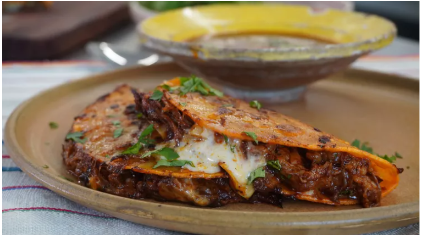

Tacos

Description
Mexican birria tacos, Jalisco-style, made with braised beef that's slow-cooked in a fragrant 3-chile sauce with a delicious
spice mix. Crispy tacos, and tender, mouth-watering beef team up with melted Mexican cheese in this impressive meal. This recipe takes
a little time but it's so worth it!
Ingredients
For the pork:
- 5 Goya Guajillo Chiles
- 5 Goya Pasilla Chiles or Goya Ancho Chiles
- 1 chipotle pepper from a can of Goya Chipotle Chile in Adobo Sauce
- 1 medium white onion, halved
- 1 (20 ounce) can Goya Pineapple Chunks
- ¼ cup Goya White Vinegar
- 2 tablespoons Goya Minced Garlic
- 1 teaspoon Goya Cumin
- Goya Adobo with Pepper, to taste
- 1 (2 1/2 pound) boneless, skinless pork butt, cut into 1/2-inch cubes
- 2 tablespoons Goya Vegetable Oil
For the garnish:
- 1 (10 ounce) package Goya Corn Tortillas, warmed
- 2 tablespoons finely chopped fresh cilantro
- 1 lime, cut into wedges
Steps
- Bring 2 cups water to boil in medium saucepan over medium-high heat. Add guajillo and pasilla chiles.
Reduce heat to medium-low and simmer until chiles soften, about 10 minutes; transfer to plate.
Remove and discard stem and seeds. Meanwhile, coarsely chop one onion half; reserve remaining half.
Strain pineapples; reserve juice and fruit separately.
- Transfer guajillo, pasilla and chipotle chiles, chopped onion half, reserved pineapple juice, vinegar,
garlic and cumin to bowl of food processor. Puree until smooth, about 2 minutes. Transfer chile mixture to
saucepan over medium-high heat. Bring chile mixture to a boil; cook until paste loses raw onion taste, about
2 minutes. Season with Adobo; cool. In large container with lid, or in large ziptop bag, combine pork cubes,
cooled chile marinade and reserved pineapple chunks; transfer to refrigerator. Marinate at least 2 hours,
or up to 24 hours.
- Heat oil in large skillet over medium-high heat. Strain pork and pineapples, discarding marinade.
Add pork and pineapples to skillet. Cook in batches until dark golden brown on all sides and cooked through,
about 15 minutes; transfer to large serving plate.
- Meanwhile, finely slice remaining onion half. Transfer sliced onion to bowl with cilantro.
Serve pork and pineapple mixture in warm tortillas. Garnish pork tacos with cilantro, onions
and limes.